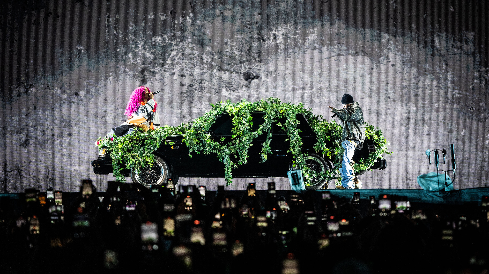
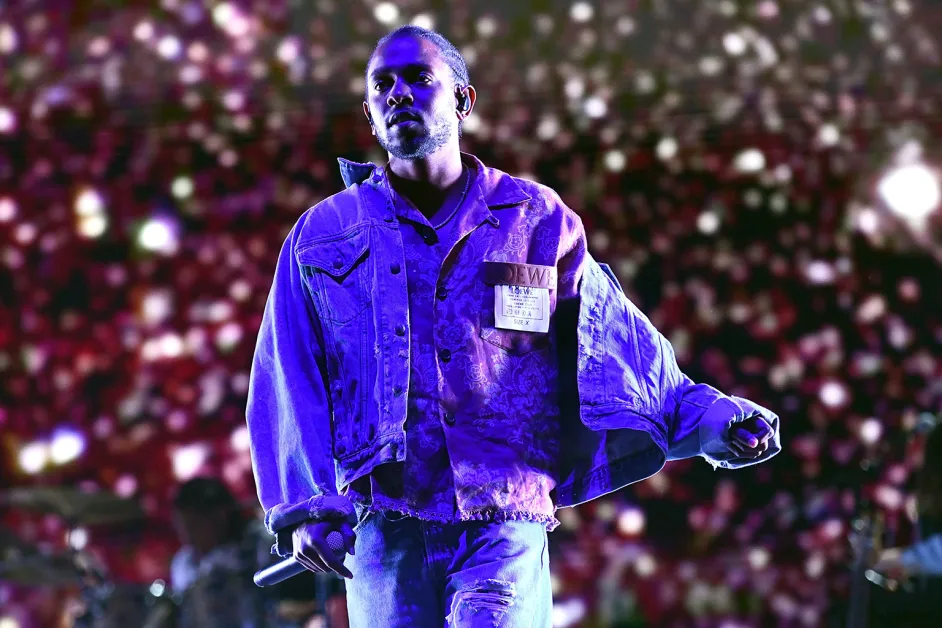
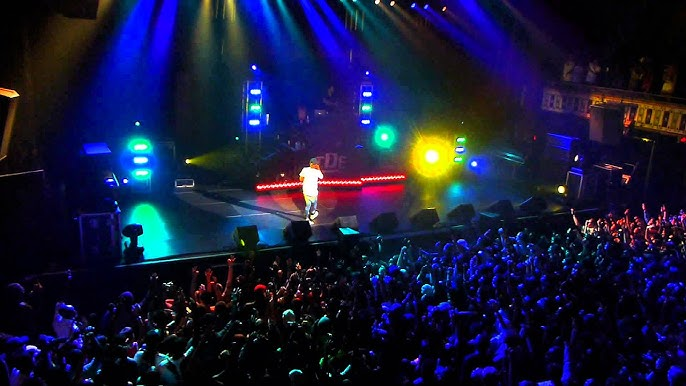

Upcoming Tours
GNX World Tour Extension (2026)
After the success of the 2025 Grand National Tour supporting his album GNX, Kendrick Lamar is expected to continue performing major shows worldwide in 2026.
Summer Festival Appearances (2026)
Kendrick Lamar is expected to appear at several international music festivals in 2026, performing his biggest hits and songs from GNX.
Global Stadium Shows (2026)
Fans anticipate new stadium performances across Europe, Asia, and North America as Kendrick Lamar continues promoting his latest music and collaborations.
Previous Tours

Grand National Tour (2025)
A major stadium tour supporting Kendrick Lamar’s album GNX, featuring performances across North America, Europe, and Australia.
The Big Steppers Tour (2022–2023)
A worldwide tour promoting Mr. Morale & The Big Steppers, known for its theatrical stage design and emotional storytelling.

The DAMN. Tour (2017–2018)
A global tour supporting the Pulitzer Prize–winning album DAMN., featuring hits like “HUMBLE.” and “DNA.”
King Kunta Tour (2015)
A European tour celebrating the release of To Pimp a Butterfly, highlighting Kendrick’s socially conscious music.

good kid, m.A.A.d city Tour (2013)
Kendrick Lamar’s first major headlining tour following the success of his breakthrough album.
Personal Info
Name: Kendrick Lamar Duckworth
Born: June 17, 1987, Compton, California
Known For: Pulitzer-winning rapper, lyricist, storyteller